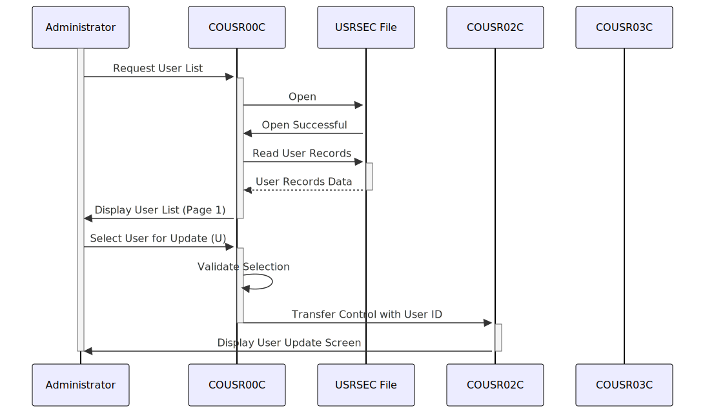

Gerado em: 1º de outubro de 2024
Título do Documento: Especificação da Funcionalidade de Lista de Usuários da Aplicação CardDemo
Descrição Resumida:
Este documento descreve a funcionalidade do programa COUSR00C dentro da aplicação CardDemo. Este programa é responsável por exibir uma lista de usuários para pessoal autorizado (administradores). Ele permite a navegação por registros de usuários paginados e a seleção de usuários específicos para atualização ou exclusão.
Histórias do Usuário:
Como administrador, preciso visualizar uma lista de todos os usuários no sistema para gerenciar suas contas.
Épico Relacionado: 6 - Gerenciamento de Usuários e Segurança
Requisitos Técnicos:
- Exibição da Lista de Usuários: O programa recupera e exibe uma lista de usuários do arquivo
USRSEC. A lista é paginada, com um máximo de 10 usuários exibidos por página.
- Entrada: ID do usuário da tela anterior ou comando para buscar a próxima ou anterior página.
- Processo:
- Abrir arquivo
USRSEC.
- Se o ID do usuário for fornecido, leia o registro com o ID fornecido.
- Se um comando de navegação de página for recebido, calcule o ID do usuário inicial com base no número da página atual.
- Leia e exiba até 10 registros de usuários do ID do usuário inicial.
- Armazene os IDs de usuário primeiro e último da página exibida para fins de navegação.
- Saída: Uma tela exibindo a lista de usuários com sua ID, nome e tipo.
- Seleção do Usuário: O administrador pode selecionar um usuário da lista para atualização ou exclusão.
- Entrada: Seleção do usuário (U para atualização, D para exclusão) e o ID do usuário selecionado.
- Processo:
- Validar a seleção do usuário (U/D).
- Armazene a ação selecionada e o ID do usuário.
- Saída: Transfira o controle para o programa apropriado (
COUSR02C para atualização, COUSR03C para exclusão) junto com as informações do usuário selecionado.
- Paginação: O administrador pode navegar entre as páginas de registros de usuários usando as teclas de função (
PF7 para a página anterior, PF8 para a próxima página).
- Entrada: Pressione a tecla de função (
PF7 ou PF8).
- Processo:
- Determine o número da página de destino com base na tecla pressionada.
- Atualize a variável
CDEMO-CU00-PAGE-NUM.
- Busque e exiba os registros do usuário para a página de destino.
- Saída: A tela da lista de usuários atualizada exibindo a página solicitada.
Modelos Relacionados:
SEC-USER-DATA: Representa um registro de usuário no arquivo USRSEC.
SEC-USR-ID: ID do Usuário (String).SEC-USR-FNAME: Primeiro Nome do Usuário (String).SEC-USR-LNAME: Sobrenome do Usuário (String).SEC-USR-TYPE: Tipo de Usuário (String).
Configurações:
WS-USRSEC-FILE: Nome do arquivo do arquivo de usuário seguro (USRSEC).
Melhorias de Código:
- Implementar um mecanismo de tratamento de erros mais robusto. Em vez de simplesmente definir um sinalizador de erro, considere registrar mensagens de erro com detalhes como carimbo de data/hora, nome do programa e erro específico encontrado. Isso ajudará na depuração e resolução de problemas.
- Adicione comentários para esclarecer o propósito das variáveis e seções do código. Por exemplo, explique o papel de
CDEMO-CU00-INFO e seus subcampos.
- Explore a possibilidade de usar uma estrutura de dados para gerenciar as seleções do usuário em vez de variáveis individuais como
SEL0001I a SEL0010I. Isso pode simplificar o código e torná-lo mais sustentável.
- Considere usar um loop para iterar pelos registros do usuário em vez de repetir blocos de código para cada registro. Isso melhorará a legibilidade do código e reduzirá a redundância.
Melhorias de Segurança:
- Limpeza de Entrada: Implemente a limpeza de entrada para evitar ataques de injeção. Valide e limpe todas as entradas do usuário antes de usá-las em consultas de banco de dados ou outras operações confidenciais.
- Tratamento de Erros: Evite exibir informações confidenciais, como caminhos de arquivo ou detalhes de conexão de banco de dados, em mensagens de erro. Use mensagens de erro genéricas que não revelem os internos do sistema.
- Log: Implemente práticas seguras de registro, garantindo que dados confidenciais, como senhas ou IDs de usuário, não sejam registrados em texto não criptografado. Use técnicas de máscara ou hash para proteger informações confidenciais em logs.
- Autenticação e Autorização: Revise os mecanismos de autenticação e autorização para garantir que apenas pessoal autorizado possa acessar e modificar os dados do usuário. Implemente políticas de senha forte e considere o uso de autenticação multifator para segurança aprimorada.
Diagrama Conceitual:

–Made by “Smart Engineering” (by Compass.UOL)–